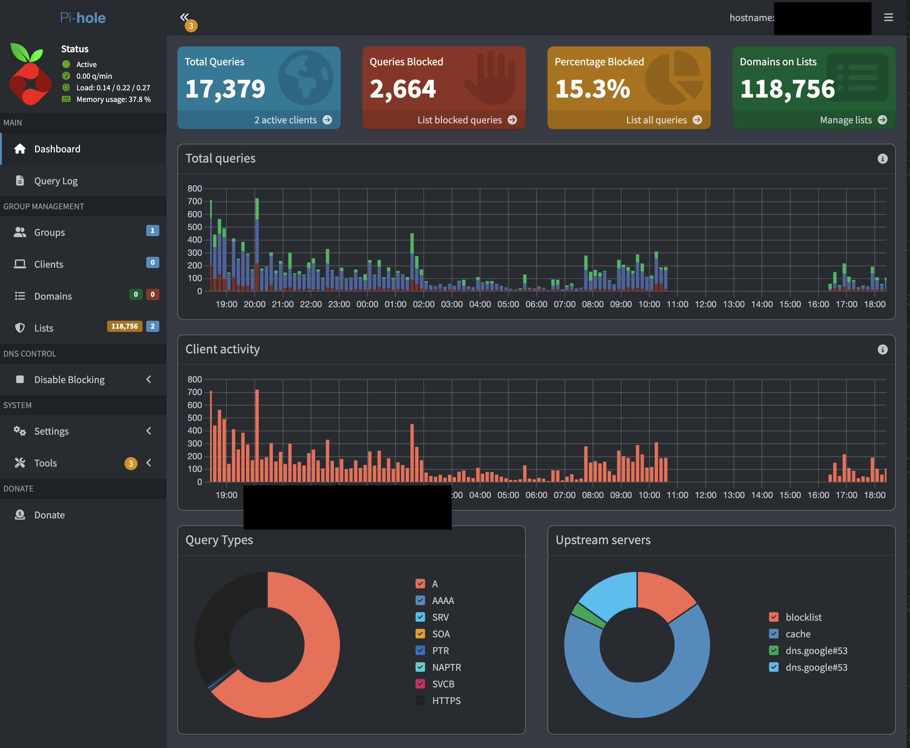

While working on this project I learned a lot about Linux and networking. I learned how to install and configure Ubuntu Server and how to set up Pi-Hole to work with my home network. I also learned about DNS and how it works, as well as how to configure my home router to use Pi-Hole as its primary DNS server. Additionally I learned about the importance of network security and how using a networkwide adblocker can help protect my devices from unwated traffic. Additionally I made it so that this would be the secondary DNS filter on my network in case it fails. In the event that it does my network is set up so that all traffic will be routed through my home server that is also running Pi-Hole through docker.
